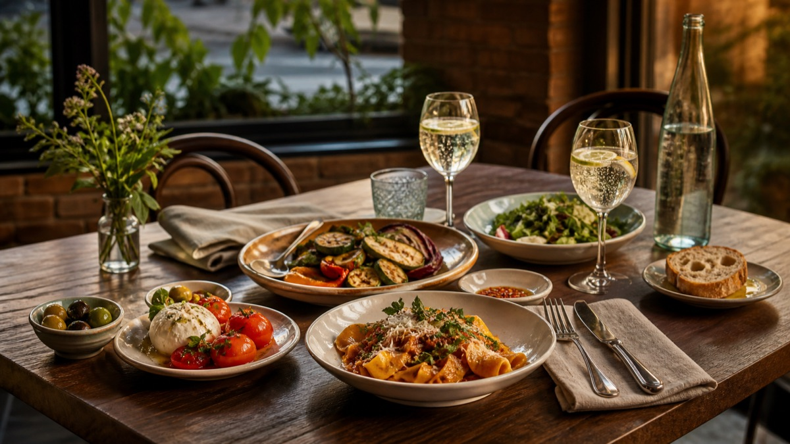

A neighborhood kitchen serving generous plates, thoughtful wine, and ingredients from growers we know.
Wood-fired · Vegan
Tomato, fennel, aged pecorino
Basil oil · Sourdough
New potatoes · Preserved lemon